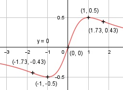

Aufgabe 106 x f(x) = -------- x2 + 1 Quotientenregel erste Ableitung: u = x, u' = 1 v = x2 + 1, v' = 2x 1 * (x2 + 1) - 2x * x -x2 + 1 f'(x) = ------------------------- = ------------ (x2 + 1)2 (x2 + 1)2 Quotientenregel zweite Ableitung: u = -x2 + 1, u' = -2x v = (x2 + 1)2 Kettenregel: v' = 2 * (x2 + 1) * 2x = 4x * (x2 + 1) -2x*(x2 + 1)2 - 4x*(x2 + 1)*( -x2 + 1) f''(x) = ---------------------------------------- (x2 + 1)4 (x2 + 1)*[-2x*(x2 + 1) - 4x*(-x2 + 1)] f''(x) = ---------------------------------------- (x2 + 1)4 - 2x3 - 2x + 4x3 - 4x 2x3 - 6x f''(x) = ------------------------ = ----------- (x2 + 1)3 (x2 + 1)3 2x * (x2 - 3) f''(x) = --------------- (x2 + 1)3 Zur Beurteilung, ob f'''(x) ≠ 0: (Begründung siehe Aufgabe 105) u = 2x * (x2 - 3) = 2x3 - 6x, u' = 6x2 - 6 6x2 - 6 f'''(x) = ----------- ≠ 0 für x ≠ 1,-1. (x2 + 1)3 Polstellen, Nenner = 0: x2 + 1 > 0 für alle x --> keine Polstelle Definitionsbereich: -∞ < x < ∞ Waagerechte Asymptote: x f(x) = -------- = 0 für x --> ± ∞ x2 + 1 Wertebereich: -0,5 ≤ f(x) ≤ 0,5 f(x) ≠ (siehe Extrempunkte) Symmetrie zur y-Achse bzw. zum Punkt (0|0): -x x f(-x) = ----------- = - -------- = -f(x) (-x)2 + 1 x2 + 1 --> Punktsymmetrie f(x) ≠ f(-x) --> keine Achsensymmetrie Nullstellen: f(x) = 0 x -------- = 0 |*x2 + 1 x2 + 1 x = 0 Schnittpunkt mit der y-Achse: x = 0 0 f(0) = ------- = 0 0 + 1 Sy(0|0) Extrempunkte: f'(x) = 0 -x2 + 1 ----------- = 0 |*(x2 + 1)2 (x2 + 1)2 -x2 + 1 = 0 | +x2 x2 = 1 |ⱱ x1,2 = ± 1 1 f(1) = ------- = 0,5 12 + 1 -1 f(-1) = ----------- = -0,5 (-1)2 + 1 2 * 1 * (12 - 3) f''(1) = ------------------- < 0 --> (12 + 1)3 Hochpunkt (1|0,5) 2 * (-1) * ((-1)2 - 3) f''(-1) = -------------------------- > 0 --> ((-1)2 + 1)3 Tiefpunkt (-1|-0,5) Wendepunkte: f''(x) = 0 2 * x * (x2 - 3) ----------------- = 0 |* (x2 + 1)3 (x2 + 1)3 2x * (x2 - 3) = 0 2x = 0 |:2 x1 = 0 f'''(0) ≠ 0 (siehe oben) f(0) = 0 --> Wendepunkt (0|0) x2 - 3 = 0 |+3 x2 = 3 |ⱱ x2,3 = ± 1,73, f'''(±1,73) ≠ 0 (siehe oben) 1,73 f(1,73) = ----------- = 0,43 --> 1,732 + 1 Wendepunkt (1,73|0,43) f(-1,73) = -0,43 wegen Punktsymmetrie --> Wendepunkt (-1,73|-0,43) Graph:
